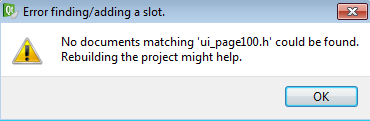

Si desea asociar la pulsación del botón a la ejecución de una función creada por el usuario, siga los pasos que se indican a continuación:
Arrastre el objeto a la página.
Haga clic con el botón derecho(del ratón) en el botón y seleccione “go to slot”.
Si aparece la siguiente ventana:

Necesita hacer un “Build All” y luego cerrar la página actualmente abierta seleccionando File → Close “pagexxx.ui”. Cuando se vuelva a abrir la página, repita la operación desde el punto 2.
Implemente la función en lenguaje C++ en la ventana que se abrió en el paso anterior.